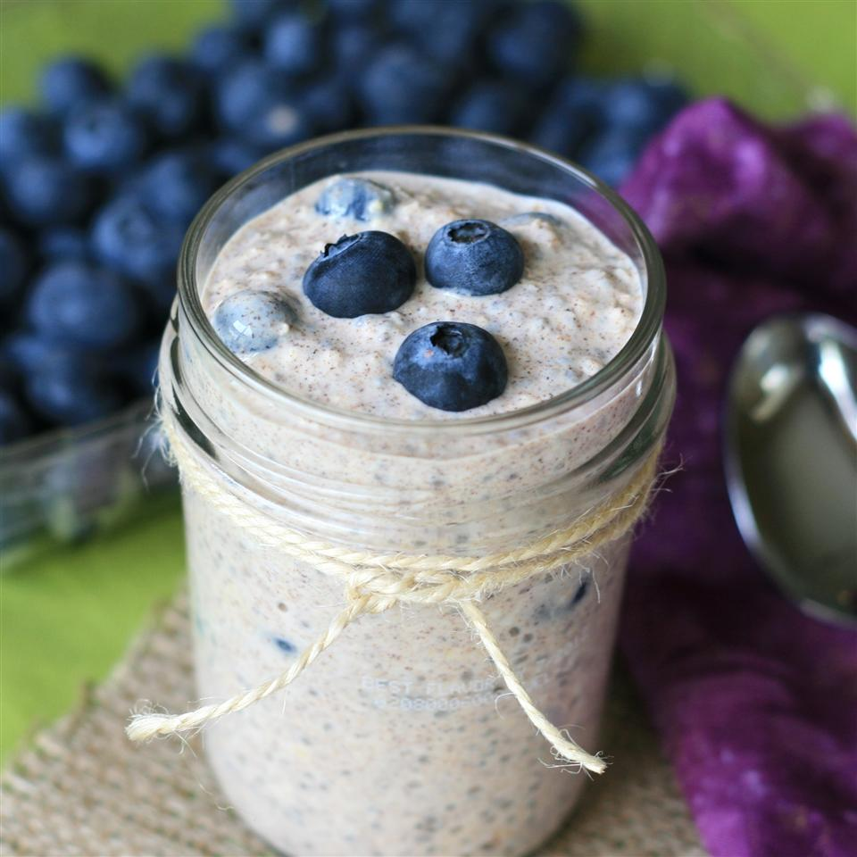

No-Cook Overnight Oatmeal.

Description
I love overnight oats with yogurt. I make up a few of these at a time for a quick, on-and-go breakfast. You can use different spices or maple syrup and your favorite berry or fruit.
Ingredients
- ⅓ cup milk
- ¼ cup Greek yogurt
- ¼ cup rolled oats
- 2 teaspoons honey
- 1 ½ cups all-purpose flour
- 2 teaspoons chia seeds
- 1 teaspoon ground cinnamon
- ¼ cup fresh blueberries
Steps
- Combine milk, yogurt, oats, honey, chia seeds, and cinnamon in a 1/2-pint jar with a lid; cover and shake until combined. Fold in blueberries.
- Cover and refrigerate, 8 hours to overnight.